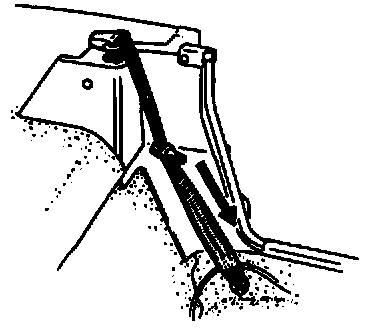
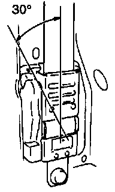

Seat Belt Emergency Locking Retractor (ELR)
CAUTION: If the load limiter mechanism operates, the belt will no longer withdraw and retract normally. Replace the belt if the load limiter mechanism operates.1. Verify that the belt can be pulled out smoothly, and that it moves smoothly when worn.

2. Verify that the retractor locks when the belt is quickly pulled.
3. Remove the retractor. (Refer to SEAT BELT REMOVAL/INSTALLATION.)
4. Hold the retractor as it would be installed.
5. Slowly incline the retractor while pulling out the belt.

6. Verify that the retractor locks at approximately 30 ° inclination.
7. If not as specified, replace the seat belt.